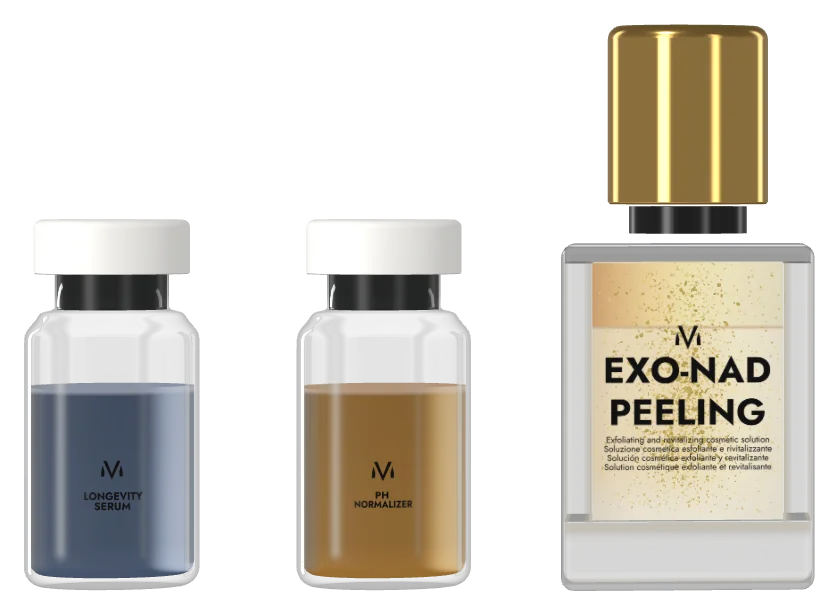

PEELINGמקצועי
אקסוזומים סינתטיים · SKIN LONGEVITY PEEL
EXO-NAD
אריכות חיים לעור, בשלושה שלבים
פילינג ביוהאקינג תלת־שלבי ממעבדות VM באיטליה: פילינג דו-פאזי, מנטרל pH וסרום Longevity עם אקסוזומים ו-NAD⁺.
- AHA + BHA ≈30%
- NAD⁺
- אקסוזומים סינתטיים
- פיצפטריק I–VI
למה?
עור חסר ברק מסגיר את גילו
תאים מתים מעמעמים את פני העור; הגוון נעשה בלתי אחיד; כתמי שמש, PIH וכתמי אקנה נשארים לאורך זמן. ההתחדשות חייבת לבוא יחד עם שיקום.
אינדיקציות
- עור עייף וחסר ברק
- גוון בלתי אחיד · כתמי שמש
- PIH · כתמי אקנה
- קמטוטים
מה בפנים
שלושה נוזלים, רצף אחד

פילינג דו-פאזי ליפידי-חומצי (AHA + BHA ≈30%), מנטרל עם קולגן ו-B12, וסרום עם אקסוזומים, NAD⁺, Epitalon ו-GHK-Cu.
אקסוזומים סינתטיים — המחשה
רכיבים פעילים
- 1 · Biphasic Peel · ליפידי + חומצי
- 2 · pH Normalizer · קולגן, B12
- 3 · Longevity Serum · NAD⁺, Epitalon, GHK-Cu
- חומצה טרנקסמית ונוגדי חמצון
הפורמולה המלאה
- שילוב חומצות AHA ו-BHA (כ־30%)
- חומצה טרנקסמית ורכיבים נוגדי חמצון
- קולגן ופפטידים ביומימטיים
- ויטמין B12
- מבנים אקסוזומליים סינתטיים
- NAD⁺
- Epitalon – אפיטלון
- GHK-Cu
הרגישו
עור מחודש, מוצק ואחיד יותר
מסיר תאים מתים ומאיץ את ההתחדשות; משפר מוצקות, אלסטיות וגוון; מגביר את הזוהר – אידיאלי לפני אירוע מיוחד.
- האצת התחדשות
- מוצקות ואלסטיות
- גוון אחיד · עור הנוטה למלזמה
- זוהר לפני אירועים
פרוטוקול
ביקור אחד, כל 3–4 שבועות
פילינג, נטרול והחדרת ה-Longevity Serum. טיפול בודד או סדרה, בכל ימות השנה; בסיום – EXOCELL MASK ומקדם הגנה.
בסיום: EXOCELL MASK + SPF
- 01
Biphasic Peel
- 02
pH Normalizer
- 03
Longevity Serum
הצעה
הכניסו את EXO-NAD לקליניקה שלכם
לשימוש מקצועי בלבד. טיפול אחד כל 3–4 שבועות, בודד או כסדרה. פרוטוקולים והדרכה מבית מיטודרם; בקשו פרטים על מחירים.
מצאו מומחה
מומחי MITODERM מוסמכים
פרוטוקול V-TECH, פילינג EXO-NAD ומסכת EXOCELL מבוצעים על ידי איש מקצוע.
מקצוע
עדיין אין מומחים מוסמכים בקטגוריה זו – ראו את הרשימה המלאה.
רשימת קוסמטיקאיות וקליניקות מוסמכות
אתם קוסמטיקאים?הגשת בקשה